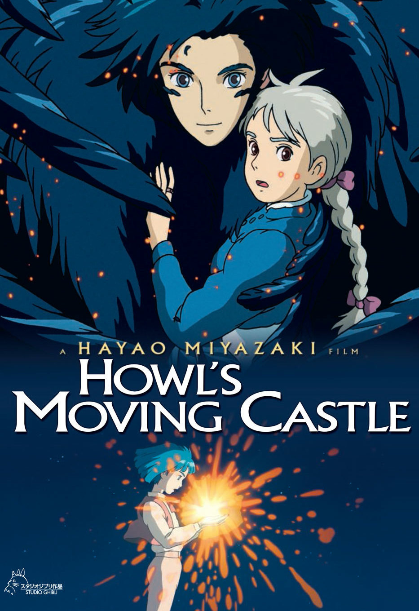
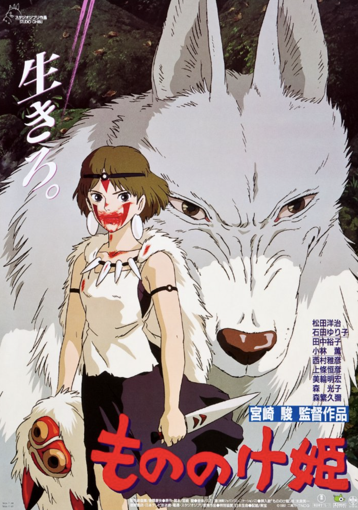

-
AS ASAS DO VENTO, 2013

O filme narra a história de Jiro Horikoshi, projetista do avião de caça Mitsubishi A5M e o seu sucessor, Mitsubishi A6M "Zero", usado pelo Império do Japão durante a Segunda Guerra Mundial.
-
PONYO, 2008

O filme conta a história de Sōsuke, um rapaz de cinco anos, e Ponyo, uma princesa peixinho-dourado que deseja muito virar humana. Um dia Ponyo foge do seu lar no oceano e vai ter à encosta onde Sōsuke a encontra e promete protegê-la para sempre.
-
O CASTELO ANDANTE, 2004

Sophie é uma jovem de baixa autoestima que pensa que o seu destino é manter a chapelaria da família e portanto, não possui ambições. Certo dia quando saiu para visitar a sua irmã Lettie, ela é importunada por alguns oficiais do exército, mas é salva por um jovem e bonito feiticeiro loiro, que a ajuda a chegar ao seu destino mais rapidamente.
-
A VIAGEM DE CHIHIRO, 2001

Chihiro e os seus pais são obrigados a mudar para outra cidade. Durante a mudança o seu pai, decide ir por um atalho para economizar tempo, porém, acabam por de perder e chegaam a um edifício com um estranho túnel no centro.
-
PRINCESA MONONOKE, 1997

A aldeia de Ashitaka é invadida por um estranho demônio, e quem resolve enfrentá-lo é o corajoso príncipe. Ele luta com o bicho e consegue matá-lo, mas antes fica com o braço ferido e é contaminado por uma maldição.